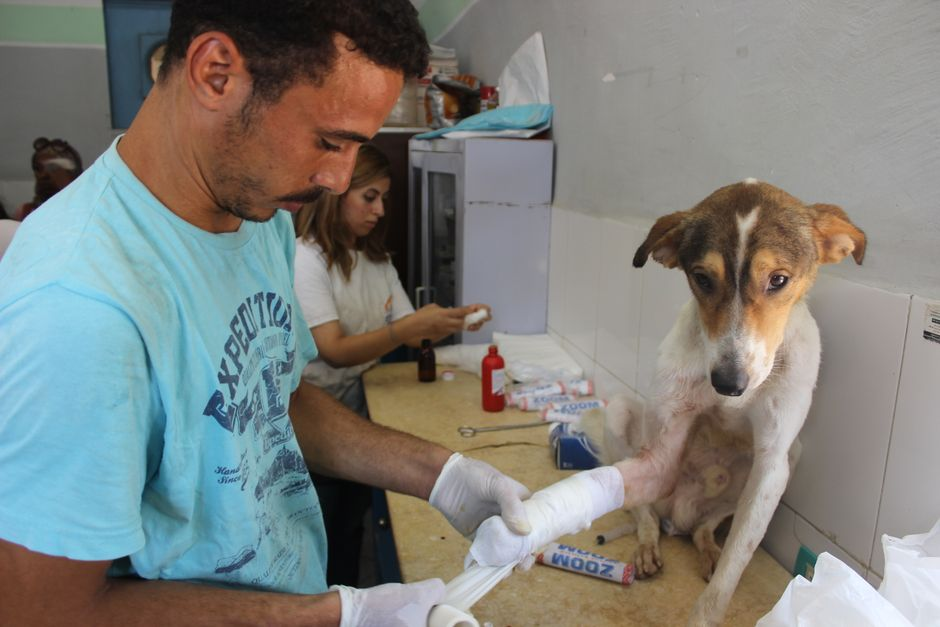

Técnicas avanzadas para curar heridas menores en perros
Cuando tu perro se lastima, es importante actuar con rapidez y eficacia para evitar complicaciones. En esta guía, te presentamos cinco técnicas avanzadas que puedes aplicar para tratar heridas menores en tu mascota. Estas técnicas son fáciles de implementar y pueden ser de gran ayuda en situaciones de primeros auxilios.
Photo: Bethany Ferr / Pexels
1. Limpieza correcta
La limpieza de una herida es crucial para prevenir infecciones. Utiliza agua tibia y un paño suave para limpiar la zona afectada. Evita el uso de jabones fuertes o alcohol, ya que estos pueden irritar la piel del perro. En lugar de eso, opta por un jabón suave para humanos o agua oxigenada para perros.
Ejemplo práctico: Si tu perro se lastima jugando en el jardín y empieza a lamérselo, asegúrate de limpiar la herida con agua tibia y un paño suave. Luego, seca la zona con una toalla suave.
2. Aplicación de vendas y ungüentos

Photo: Ahmed Hamed Aly / Pexels
Una vez que la herida está bien limpiada, es necesario taparla para evitar que se infecte. Puedes usar vendas suaves o un parche especial para heridas de perros. Antes de aplicar la venda, asegúrate de que la herida esté bien secada.
Ejemplo práctico: Si tu perro se lastima en una pata, coloca una venda suave en la zona. Recuerda cambiar la venda diariamente y inspeccionar la herida para asegurarte de que no se infecte.
3. Uso de ungüentos antibacterianos
Existen ungüentos antibacterianos específicos para perros que pueden ayudar a prevenir infecciones y promover la cicatrización. Aplica una pequeña cantidad de ungüento en la zona afectada y asegúrate de que no se extienda alrededor de la herida.
Ejemplo práctico: Si tu perro se lastima en la boca, aplica un poco de ungüento antibacteriano específico para perros. Asegúrate de que no se extienda a las encías y cambia el ungüento cada día.
4. Observación y cuidados diarios
Es fundamental observar la herida regularmente para asegurarte de que no se infecte. Si notas signos de inflamación, hinchazón o secreción, es importante llevar a tu perro al veterinario.
Ejemplo práctico: Diariamente verifica la herida de tu perro y asegúrate de que no se infecte. Si notas signos de inflamación, toma medidas inmediatas y ve al veterinario.
5. Mantén la zona seca
La humedad puede contribuir a la infección de las heridas. Trata de mantener la zona afectada lo más seca posible. Puedes usar paños secos para secar la herida después de bañar a tu perro o aplicar un secante ligero.
Ejemplo práctico: Si tu perro se lastima en la pata y se moja la herida al jugar, sécate la zona rápidamente con un paño seco. Asegúrate de que la herida esté bien seca antes de aplicar cualquier tratamiento.
Conclusión
Estas cinco técnicas avanzadas para curar heridas menores en perros son prácticas y efectivas. Si sigues estos pasos, podrás proporcionar a tu mascota el mejor cuidado posible en situaciones de primeros auxilios. Recuerda siempre tener a mano los suministros necesarios y, en caso de dudas, no dudes en consultar a un veterinario.